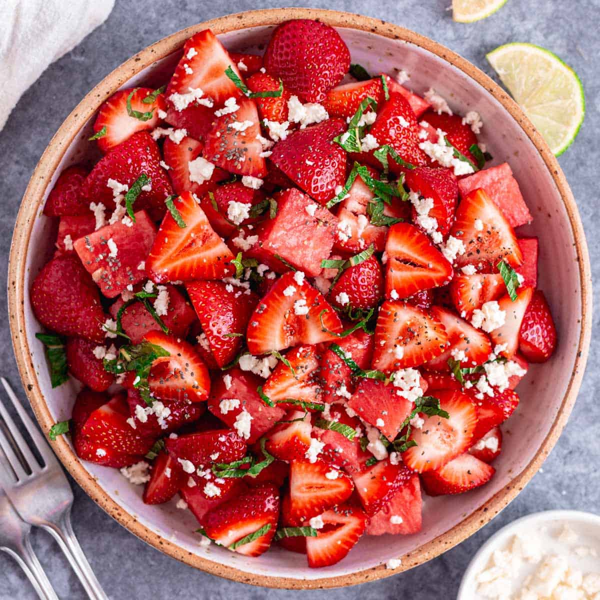

Strawberry Salad

Description
Watermelon Strawberry Salad is a delicious light,
refreshing summer salad loaded with fresh sweet strawberries
, juicy watermelon, and feta cheese and topped with Lime Honey Dressing.
Ingredients and Steps
- In a mason jar (or a small bowl) mix the salad dressing ingredients, shake well and set aside.
- Trim the strawberries and cut them into 3 or 4 slices.
- Cut the watermelon into 1 to 1 ½ inch cubes and arrange it on a serving platter together with strawberries. Gently stir in the chopped mint, crumbled feta cheese, and chia seeds. To finish, drizzle with the salad dressing, more fresh limes, and add sea salt flakes (delicious!) and pepper as needed. You only need a little. Enjoy right away!